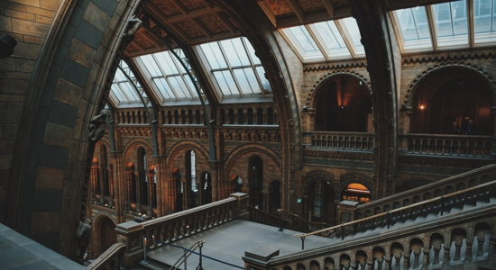

About Hogwart
Hogwarts School of Witchcraft and Wizardry is the British wizarding school, located in the Scottish
Highlands. It takes students from the United Kingdom of Great Britain and Northern Ireland, and also
the Republic of Ireland.
The castle is located in the mountains near a loch. The precise location of the school can never be
uncovered because it was rendered Unplottable. To Muggles, the school looks like an old abandoned
castle.
Similarly, most wizarding schools locations are protected in order to prevent their ways of teaching
being
revealed, as well as protect the students and schools themselves from any harm.
Established around the 10th century, Hogwarts is considered to be one of the finest magical institutions
in
the Wizarding World, though other notable schools included Beauxbatons Academy of Magic in France,
the Durmstrang Institute in Scandinavia, and Ilvermorny School of Witchcraft and Wizardry in the United
States. Children with magical abilities are enrolled at birth, and acceptance is confirmed by owl
post at
age eleven. However, if the child in question is a Muggle-born, a professor from the school would come
and
inform the child's parents.
The school's motto is Draco Dormiens Nunquam Titillandus (Draco Dormiens Nvnqvam Titillandvs), which,
translated from Latin, means "Never tickle a sleeping dragon".
The three highest towers are the Astronomy, Ravenclaw, and Gryffindor ones.

Hogwarts Castle
Hogwarts School is located in Hogwarts Castle, a large castle somewhere in the Highlands of Scotland.
The
castle has extensive grounds with sloping lawns, flowerbeds and vegetable patches, a loch (called
the Black
Lake), a large dense forest (called the Forbidden Forest), several greenhouses and other outbuildings,
and a
full-size Quidditch Pitch.
There is also an owlery, which houses all the owls owned by the school and
those
owned by students.
The
castle is known for its many updates and changes in layout throughout the years, such as regenerating
itself
after the Battle of Hogwarts. It should be noted that some rooms in the school tend to "move around,"
and so
do the steps on the Grand Staircase. Albus Dumbledore once noted that even he did not know all of
Hogwarts'
secrets.
The school has numerous charms and spells on and around it that make it impossible for a Muggle to see
it
as
the school; rather, they see only ruins and several warnings of danger. Witches and wizards
cannot Apparate or Disapparatein Hogwarts grounds, except for when the Headmaster lifts the enchantment,
whether only in certain areas or for the entire campus, so as to make the school less vulnerable when it
serves the headmaster to allow Apparition. Electricity and electronic devices are not found at
Hogwarts.